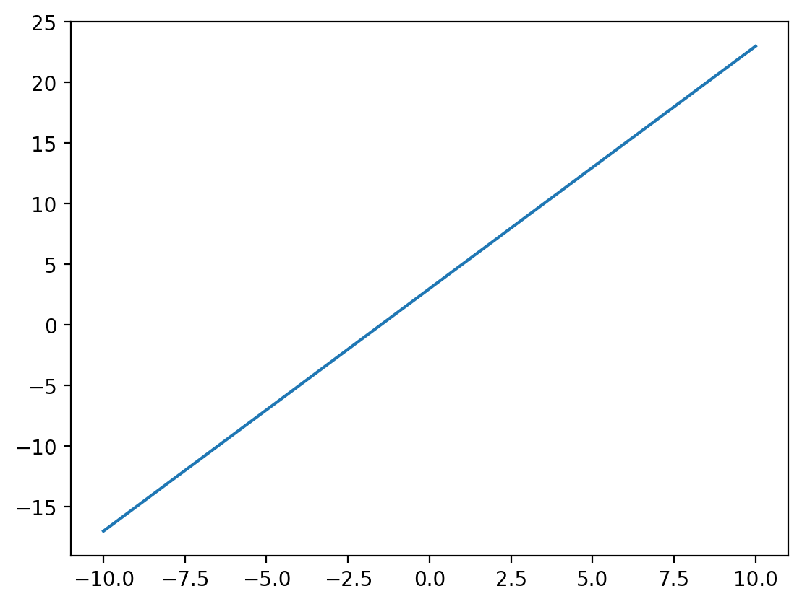
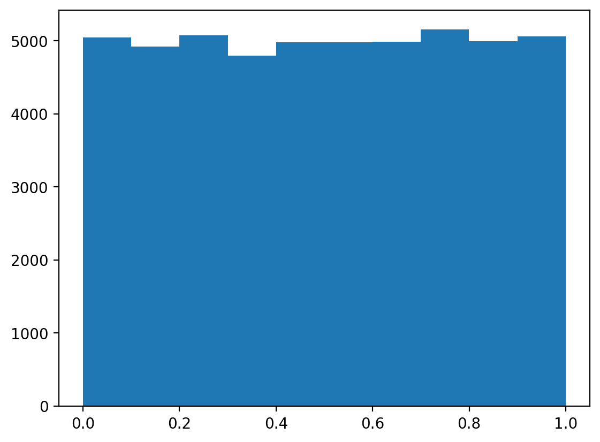

import matplotlib.pyplot as plt
import numpy as np
import torch
import pandas as pd
# Retina mode
%matplotlib inline
%config InlineBackend.figure_format = 'retina'Set
ML
A = np.linspace(0, 1, 100)
A = np.arange(0, 1, 0.01)# uncountable set
x = np.random.rand(100000000)
#print(x)
np.unique(x).size100000000# Set of lines in 2d
def line_fx(x, m, c):
return m*x + c
line_fx(1, 2, 3)5x_lin = np.linspace(-10, 10, 100)
y_lin_2_3 = line_fx(x_lin, 2, 3)
plt.plot(x_lin, y_lin_2_3)
from ipywidgets import interact
import ipywidgets as widgets
def plot_line(m, c):
x_lin = np.linspace(-10, 10, 100)
y_lin = line_fx(x_lin, m, c)
plt.figure(figsize=(8, 6))
plt.plot(x_lin, y_lin, label=f'Line: y = {m}x + {c}')
plt.axhline(0, color='black', linewidth=0.8, linestyle='--')
plt.axvline(0, color='black', linewidth=0.8, linestyle='--')
plt.grid(alpha=0.5)
plt.legend()
plt.title("Interactive Line Plot")
plt.xlabel("x")
plt.ylabel("y")
plt.ylim(-10, 10)
plt.show()
# Interactive widget
interact(plot_line,
m=widgets.FloatSlider(value=1, min=-10, max=10, step=0.1, description='Slope (m)'),
c=widgets.FloatSlider(value=0, min=-10, max=10, step=0.1, description='Intercept (c)'));samples_uniform = np.random.rand(50000)
plt.hist(samples_uniform)(array([5044., 4923., 5075., 4798., 4977., 4982., 4989., 5158., 4992.,
5062.]),
array([3.93041625e-05, 1.00032757e-01, 2.00026211e-01, 3.00019664e-01,
4.00013117e-01, 5.00006570e-01, 6.00000024e-01, 6.99993477e-01,
7.99986930e-01, 8.99980383e-01, 9.99973836e-01]),
<BarContainer object of 10 artists>)
samples_uniformarray([0.18674884, 0.81968297, 0.80087693, ..., 0.46548473, 0.47943922,
0.73968035])samples_normal = np.random.randn(50000)
plt.hist(samples_normal)(array([ 23., 285., 1985., 7467., 14803., 14914., 7988., 2201.,
309., 25.]),
array([-4.18722189, -3.35305381, -2.51888572, -1.68471764, -0.85054956,
-0.01638148, 0.8177866 , 1.65195468, 2.48612276, 3.32029084,
4.15445892]),
<BarContainer object of 10 artists>)samples_normal[:50]array([-1.02610077, 1.30693882, -0.60887913, -2.21509403, -0.49288884,
-0.24255606, -0.06006607, -0.43524481, 0.09849432, 0.65723845,
0.26736775, -0.23655818, -2.18103935, -0.49017392, 1.62213243,
0.38596106, 0.93529816, 1.08752614, -0.4461042 , -0.95299851,
1.38512913, 0.09622675, -0.72466762, -0.12871054, -0.50039256,
0.11997974, -1.54530777, 0.27708632, -1.59812337, 0.91816234,
-0.07142259, -1.00183667, 0.77816444, 0.24435284, 0.91035827,
0.60326872, 0.57121044, 1.26167048, -1.15016846, -0.69882365,
-1.07502868, -0.11305347, 0.82249031, 0.49697962, -1.21883061,
-1.96468898, -0.01928378, -0.56361649, 0.48693249, -0.27086149])# Plot some 20 lines for random m and c
m = np.random.rand(20)*20 - 10
c = np.random.rand(20)*20 - 10
for i in range(20):
y_lin = line_fx(x_lin, m[i], c[i])
plt.plot(x_lin, y_lin, label=f'Line: y = {m[i]:.2f}x + {c[i]:.2f}')np.random.randn?Signature: np.random.randn(*args) Docstring: randn(d0, d1, ..., dn) Return a sample (or samples) from the "standard normal" distribution. .. note:: This is a convenience function for users porting code from Matlab, and wraps `standard_normal`. That function takes a tuple to specify the size of the output, which is consistent with other NumPy functions like `numpy.zeros` and `numpy.ones`. .. note:: New code should use the `~numpy.random.Generator.standard_normal` method of a `~numpy.random.Generator` instance instead; please see the :ref:`random-quick-start`. If positive int_like arguments are provided, `randn` generates an array of shape ``(d0, d1, ..., dn)``, filled with random floats sampled from a univariate "normal" (Gaussian) distribution of mean 0 and variance 1. A single float randomly sampled from the distribution is returned if no argument is provided. Parameters ---------- d0, d1, ..., dn : int, optional The dimensions of the returned array, must be non-negative. If no argument is given a single Python float is returned. Returns ------- Z : ndarray or float A ``(d0, d1, ..., dn)``-shaped array of floating-point samples from the standard normal distribution, or a single such float if no parameters were supplied. See Also -------- standard_normal : Similar, but takes a tuple as its argument. normal : Also accepts mu and sigma arguments. random.Generator.standard_normal: which should be used for new code. Notes ----- For random samples from the normal distribution with mean ``mu`` and standard deviation ``sigma``, use:: sigma * np.random.randn(...) + mu Examples -------- >>> np.random.randn() 2.1923875335537315 # random Two-by-four array of samples from the normal distribution with mean 3 and standard deviation 2.5: >>> 3 + 2.5 * np.random.randn(2, 4) array([[-4.49401501, 4.00950034, -1.81814867, 7.29718677], # random [ 0.39924804, 4.68456316, 4.99394529, 4.84057254]]) # random Type: method
# Plot some 20 lines for random m and c
N = 5000
m = np.random.randn(N)*0.5
c = np.random.randn(N)*0.5
for i in range(N):
y_lin = line_fx(x_lin, m[i], c[i])
plt.plot(x_lin, y_lin, label=f'Line: y = {m[i]:.2f}x + {c[i]:.2f}',
color='k', alpha=0.01)
# Set of cosines with varying phase (fixed amplitude and frequency)
def cosine_fx(x, A=1, f=1, phi=0):
return A*np.cos(2*np.pi*f*x + phi)x_lin = np.linspace(-10, 10, 1000)
y_cos_1_1_0 = cosine_fx(x_lin, 1, 1, 0)
plt.plot(x_lin, y_cos_1_1_0)def plot_cosine(A, f, phi):
x = np.linspace(0, 2, 500) # x range for visualization
y = cosine_fx(x, A, f, phi)
plt.figure(figsize=(8, 6))
plt.plot(x, y, label=f'Cosine: y = {A}cos(2π{f}x + {phi})')
plt.axhline(0, color='black', linewidth=0.8, linestyle='--')
plt.grid(alpha=0.5)
plt.legend()
plt.title("Interactive Cosine Plot")
plt.xlabel("x")
plt.ylabel("y")
plt.ylim(-2, 2)
# Interactive widget
interact(plot_cosine,
A=widgets.FloatSlider(value=1, min=0.1, max=2, step=0.1, description='Amplitude (A)'),
f=widgets.FloatSlider(value=1, min=0.1, max=5, step=0.1, description='Frequency (f)'),
phi=widgets.FloatSlider(value=0, min=0, max=2*np.pi, step=0.1, description='Phase (φ)'));
# Set datastructure in Python
A = {1, 2, 3, 4, 5}
print(A, type(A)){1, 2, 3, 4, 5} <class 'set'>A = set([1, 2, 3, 4, 5])
print(A, type(A)){1, 2, 3, 4, 5} <class 'set'># unique elements
A = {1, 2, 3, 4, 5, 1, 2, 3, 4, 5}
print(A, len(A)){1, 2, 3, 4, 5} 5# Can set contain a set?
A = {1, 2, 3}
for a in A:
print(a)1
2
3# why below code doesn't work? homework
try:
A = {1, 2, 3, {4, 5}}
except Exception as e:
print(e)unhashable type: 'set'# subset
A = {1, 2, 3, 4, 5}
B = {1, 2, 3}
print(B.issubset(A))Trueprint(A.issubset(B))Falseprint(A.issuperset(B))TrueA.issubset(A)True# Other methods in set
A{1, 2, 3, 4, 5}# check proper subset
def is_proper_subset(A, B):
return A.issubset(B) and A != Bis_proper_subset({1, 2, 3}, {1, 2, 3, 4})Trueis_proper_subset({1, 2, 3, 4}, {1, 2, 3, 4})Falseis_proper_subset({1, 2, 6}, {1, 2, 3, 4})False# empty set subset of every set
empty_set = set()
A = {1, 2, 3}
empty_set.issubset(A)Trueis_proper_subset(empty_set, A)True# be careful with empty set definition. Below is not an empty set but
# a dictionary
empty_set= {}
print(type(empty_set))<class 'dict'># Sets in NumPy
A = np.array([1, 2, 3, 4, 5])
B = np.array([1, 2, 3])
# is B a subset of A?
print(np.in1d(B, A).all())True/var/folders/z8/gpvqr8mn3w9_f38byxhnsk780000gn/T/ipykernel_16373/3300908401.py:6: DeprecationWarning: `in1d` is deprecated. Use `np.isin` instead.
print(np.in1d(B, A).all())np.in1d?Signature: np.in1d(ar1, ar2, assume_unique=False, invert=False, *, kind=None) Call signature: np.in1d(*args, **kwargs) Type: _ArrayFunctionDispatcher String form: <function in1d at 0x107c70fe0> File: ~/mambaforge/lib/python3.12/site-packages/numpy/lib/_arraysetops_impl.py Docstring: Test whether each element of a 1-D array is also present in a second array. .. deprecated:: 2.0 Use :func:`isin` instead of `in1d` for new code. Returns a boolean array the same length as `ar1` that is True where an element of `ar1` is in `ar2` and False otherwise. Parameters ---------- ar1 : (M,) array_like Input array. ar2 : array_like The values against which to test each value of `ar1`. assume_unique : bool, optional If True, the input arrays are both assumed to be unique, which can speed up the calculation. Default is False. invert : bool, optional If True, the values in the returned array are inverted (that is, False where an element of `ar1` is in `ar2` and True otherwise). Default is False. ``np.in1d(a, b, invert=True)`` is equivalent to (but is faster than) ``np.invert(in1d(a, b))``. kind : {None, 'sort', 'table'}, optional The algorithm to use. This will not affect the final result, but will affect the speed and memory use. The default, None, will select automatically based on memory considerations. * If 'sort', will use a mergesort-based approach. This will have a memory usage of roughly 6 times the sum of the sizes of `ar1` and `ar2`, not accounting for size of dtypes. * If 'table', will use a lookup table approach similar to a counting sort. This is only available for boolean and integer arrays. This will have a memory usage of the size of `ar1` plus the max-min value of `ar2`. `assume_unique` has no effect when the 'table' option is used. * If None, will automatically choose 'table' if the required memory allocation is less than or equal to 6 times the sum of the sizes of `ar1` and `ar2`, otherwise will use 'sort'. This is done to not use a large amount of memory by default, even though 'table' may be faster in most cases. If 'table' is chosen, `assume_unique` will have no effect. .. versionadded:: 1.8.0 Returns ------- in1d : (M,) ndarray, bool The values `ar1[in1d]` are in `ar2`. See Also -------- isin : Version of this function that preserves the shape of ar1. Notes ----- `in1d` can be considered as an element-wise function version of the python keyword `in`, for 1-D sequences. ``in1d(a, b)`` is roughly equivalent to ``np.array([item in b for item in a])``. However, this idea fails if `ar2` is a set, or similar (non-sequence) container: As ``ar2`` is converted to an array, in those cases ``asarray(ar2)`` is an object array rather than the expected array of contained values. Using ``kind='table'`` tends to be faster than `kind='sort'` if the following relationship is true: ``log10(len(ar2)) > (log10(max(ar2)-min(ar2)) - 2.27) / 0.927``, but may use greater memory. The default value for `kind` will be automatically selected based only on memory usage, so one may manually set ``kind='table'`` if memory constraints can be relaxed. .. versionadded:: 1.4.0 Examples -------- >>> import numpy as np >>> test = np.array([0, 1, 2, 5, 0]) >>> states = [0, 2] >>> mask = np.in1d(test, states) >>> mask array([ True, False, True, False, True]) >>> test[mask] array([0, 2, 0]) >>> mask = np.in1d(test, states, invert=True) >>> mask array([False, True, False, True, False]) >>> test[mask] array([1, 5]) Class docstring: Class to wrap functions with checks for __array_function__ overrides. All arguments are required, and can only be passed by position. Parameters ---------- dispatcher : function or None The dispatcher function that returns a single sequence-like object of all arguments relevant. It must have the same signature (except the default values) as the actual implementation. If ``None``, this is a ``like=`` dispatcher and the ``_ArrayFunctionDispatcher`` must be called with ``like`` as the first (additional and positional) argument. implementation : function Function that implements the operation on NumPy arrays without overrides. Arguments passed calling the ``_ArrayFunctionDispatcher`` will be forwarded to this (and the ``dispatcher``) as if using ``*args, **kwargs``. Attributes ---------- _implementation : function The original implementation passed in.
np.isin?Signature: np.isin( element, test_elements, assume_unique=False, invert=False, *, kind=None, ) Call signature: np.isin(*args, **kwargs) Type: _ArrayFunctionDispatcher String form: <function isin at 0x107c711c0> File: ~/mambaforge/lib/python3.12/site-packages/numpy/lib/_arraysetops_impl.py Docstring: Calculates ``element in test_elements``, broadcasting over `element` only. Returns a boolean array of the same shape as `element` that is True where an element of `element` is in `test_elements` and False otherwise. Parameters ---------- element : array_like Input array. test_elements : array_like The values against which to test each value of `element`. This argument is flattened if it is an array or array_like. See notes for behavior with non-array-like parameters. assume_unique : bool, optional If True, the input arrays are both assumed to be unique, which can speed up the calculation. Default is False. invert : bool, optional If True, the values in the returned array are inverted, as if calculating `element not in test_elements`. Default is False. ``np.isin(a, b, invert=True)`` is equivalent to (but faster than) ``np.invert(np.isin(a, b))``. kind : {None, 'sort', 'table'}, optional The algorithm to use. This will not affect the final result, but will affect the speed and memory use. The default, None, will select automatically based on memory considerations. * If 'sort', will use a mergesort-based approach. This will have a memory usage of roughly 6 times the sum of the sizes of `element` and `test_elements`, not accounting for size of dtypes. * If 'table', will use a lookup table approach similar to a counting sort. This is only available for boolean and integer arrays. This will have a memory usage of the size of `element` plus the max-min value of `test_elements`. `assume_unique` has no effect when the 'table' option is used. * If None, will automatically choose 'table' if the required memory allocation is less than or equal to 6 times the sum of the sizes of `element` and `test_elements`, otherwise will use 'sort'. This is done to not use a large amount of memory by default, even though 'table' may be faster in most cases. If 'table' is chosen, `assume_unique` will have no effect. Returns ------- isin : ndarray, bool Has the same shape as `element`. The values `element[isin]` are in `test_elements`. Notes ----- `isin` is an element-wise function version of the python keyword `in`. ``isin(a, b)`` is roughly equivalent to ``np.array([item in b for item in a])`` if `a` and `b` are 1-D sequences. `element` and `test_elements` are converted to arrays if they are not already. If `test_elements` is a set (or other non-sequence collection) it will be converted to an object array with one element, rather than an array of the values contained in `test_elements`. This is a consequence of the `array` constructor's way of handling non-sequence collections. Converting the set to a list usually gives the desired behavior. Using ``kind='table'`` tends to be faster than `kind='sort'` if the following relationship is true: ``log10(len(test_elements)) > (log10(max(test_elements)-min(test_elements)) - 2.27) / 0.927``, but may use greater memory. The default value for `kind` will be automatically selected based only on memory usage, so one may manually set ``kind='table'`` if memory constraints can be relaxed. .. versionadded:: 1.13.0 Examples -------- >>> import numpy as np >>> element = 2*np.arange(4).reshape((2, 2)) >>> element array([[0, 2], [4, 6]]) >>> test_elements = [1, 2, 4, 8] >>> mask = np.isin(element, test_elements) >>> mask array([[False, True], [ True, False]]) >>> element[mask] array([2, 4]) The indices of the matched values can be obtained with `nonzero`: >>> np.nonzero(mask) (array([0, 1]), array([1, 0])) The test can also be inverted: >>> mask = np.isin(element, test_elements, invert=True) >>> mask array([[ True, False], [False, True]]) >>> element[mask] array([0, 6]) Because of how `array` handles sets, the following does not work as expected: >>> test_set = {1, 2, 4, 8} >>> np.isin(element, test_set) array([[False, False], [False, False]]) Casting the set to a list gives the expected result: >>> np.isin(element, list(test_set)) array([[False, True], [ True, False]]) Class docstring: Class to wrap functions with checks for __array_function__ overrides. All arguments are required, and can only be passed by position. Parameters ---------- dispatcher : function or None The dispatcher function that returns a single sequence-like object of all arguments relevant. It must have the same signature (except the default values) as the actual implementation. If ``None``, this is a ``like=`` dispatcher and the ``_ArrayFunctionDispatcher`` must be called with ``like`` as the first (additional and positional) argument. implementation : function Function that implements the operation on NumPy arrays without overrides. Arguments passed calling the ``_ArrayFunctionDispatcher`` will be forwarded to this (and the ``dispatcher``) as if using ``*args, **kwargs``. Attributes ---------- _implementation : function The original implementation passed in.
A, B(array([1, 2, 3, 4, 5]), array([1, 2, 3]))response = np.in1d(B, A)/var/folders/z8/gpvqr8mn3w9_f38byxhnsk780000gn/T/ipykernel_16373/1008538269.py:1: DeprecationWarning: `in1d` is deprecated. Use `np.isin` instead.
response = np.in1d(B, A)if False in response:
print("B is not a subset of A")
else:
print("B is a subset of A")B is a subset of Aresponse.all()np.True_np.array([False, True]).astype(int).sum()np.int64(1)response.astype(int).sum() == len(B)np.True_np.isin(B, A).all()np.True_# Case where B is not a subset of A
B = np.array([1, 2, 6])
A = np.array([1, 2, 3, 4, 5])
np.isin(B, A).all()np.False_empty_set = np.array([])
A = np.array([1, 2, 3])
np.isin(empty_set, A).all()np.True_# Visualising sets using Venn diagrams
from matplotlib_venn import venn2
# Define the sets
set1 = {1, 2, 3}
set2 = {2, 3, 5}
# Create the Venn diagram
venn = venn2([set1, set2], ('Set 1', 'Set 2'))# Define the sets
setA = {1, 2, 3}
setB = {2, 3, 5}
# Create the Venn diagram
venn = venn2([setA, setB], ('A', 'B'))
# Customize the labels to show the elements and sizes
try:
venn.get_label_by_id('10').set_text(
f"A: {', '.join(map(str, setA - setB))}\n(Size: {len(setA - setB)})"
) # Only in A
venn.get_label_by_id('01').set_text(
f"B: {', '.join(map(str, setB - setA))}\n(Size: {len(setB - setA)})"
) # Only in B
venn.get_label_by_id('11').set_text(
f"A ∩ B: {', '.join(map(str, setA & setB))}\n(Size: {len(setA & setB)})"
) # Intersection (A ∩ B)
except:
pass
# Display the plot
plt.title("Venn Diagram with Labels A, B, and A ∩ B")Text(0.5, 1.0, 'Venn Diagram with Labels A, B, and A ∩ B')Set_A = set([1,2,3])
Set_B = set([2,3,5])
# Union
Union = Set_A.union(Set_B)
print('Union:', Union)Union: {1, 2, 3, 5}# numpy
Set_A = np.array(list(Set_A))
Set_B = np.array(list(Set_B))
Union = np.union1d(Set_A, Set_B)
print('Union:', Union)Union: [1 2 3 5]# From scratch
a = np.array([1, 2, 3])
b = np.array([2, 3, 5])
union = a.copy()
for i in b:
if i not in union:
union = np.append(union, i)
print('Union:', union)Union: [1 2 3 5]union = []
for element in a:
if element not in union:
union.append(element)
for element in b:
if element not in union:
union.append(element)
union = np.array(union)
print('Union:', union)Union: [1 2 3 5]np.unique(np.concatenate([a, b]))array([1, 2, 3, 5])# Intersection
Set_A = set([1,2,3])
Set_B = set([2,3,5])
Intersection = Set_A.intersection(Set_B)
print('Intersection:', Intersection)Intersection: {2, 3}# Intersection using numpy
A = np.array([1, 2, 3])
B = np.array([2, 3, 5])
Intersection = np.intersect1d(A, B)
print('Intersection:', Intersection)Intersection: [2 3]# From scratch
intersection = []
for i in a:
if i in b:
intersection.append(i)
intersection = np.array(intersection)
print('Intersection:', intersection)Intersection: [2 3]# Difference
Difference = Set_A.difference(Set_B)
print('Difference:', Difference)Difference: {1}Set_B.difference(Set_A){5}# Difference in numpy
Difference_A_B = np.setdiff1d(A, B)
print('Difference A/B:', Difference_A_B)
Difference_B_A = np.setdiff1d(B, A)
print('Difference B/A:', Difference_B_A)Difference A/B: [1]
Difference B/A: [5]# From scratch
difference_A_B = []
for i in a:
if i not in b:
difference_A_B.append(i)
difference_A_B = np.array(difference_A_B)
print('Difference A/B:', difference_A_B)
Difference A/B: [1]def difference(A, B):
"""
Function to find the difference between two sets A and B
A: numpy array 1d
B: numpy array 1d
Returns:
difference_A_B: numpy array 1d
"""
difference_A_B = []
for i in A:
if i not in B:
difference_A_B.append(i)
difference_A_B = np.array(difference_A_B)
return difference_A_B# Complement
universal_set = np.array([1, 2, 3, 4, 5, 6, 7, 8, 9, 10])
A = np.array([1, 2, 3])
complement_A = np.setdiff1d(universal_set, A)
print('Complement of A:', complement_A)Complement of A: [ 4 5 6 7 8 9 10]# Disjoint sets
Set_A = set([1,2,3])
Set_B = set([4,5,6])
Intersection = Set_A.intersection(Set_B)
print('Intersection:', Intersection)
if len(Intersection) == 0:
print('Sets are disjoint')
else:
print('Sets are not disjoint')Intersection: set()
Sets are disjointcollection_sets = np.array([[1, 2, 3], [4, 5, 6], [7, 8, 9]])
collection_sets
# check if all sets are disjoint
disjoint = True# Associative property of union
# (A ∪ B) ∪ C = A ∪ (B ∪ C)
A = np.array([1, 2, 3])
B = np.array([2, 3, 4])
C = np.array([3, 4, 5])
# (A ∪ B) ∪ C
lhs = np.union1d(np.union1d(A, B), C)
print('(A ∪ B) ∪ C:', lhs)
# A ∪ (B ∪ C)
rhs = np.union1d(A, np.union1d(B, C))
print('A ∪ (B ∪ C):', rhs)(A ∪ B) ∪ C: [1 2 3 4 5]
A ∪ (B ∪ C): [1 2 3 4 5]# Associative property of intersection
# De Morgan's laws